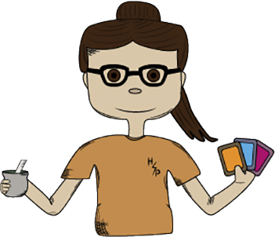
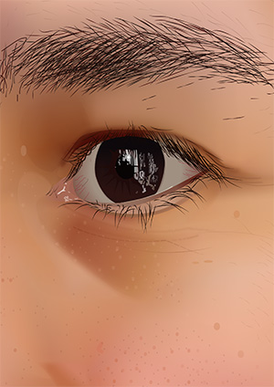
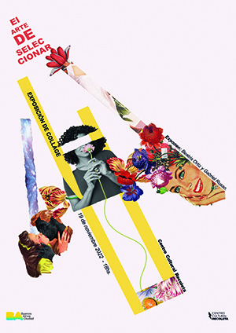
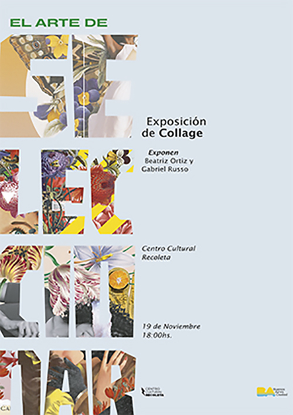

María Luján Leiva
Estudiante de Diseño y Comunicación Visual

Hola, soy María Luján Leiva, estudiante de Diseño y Comunicación Visual en la Universidad Nacional de Lanús (arg.) y trabajo en un bufet escolar. En mis momentos libres me ocupo de la parte visual de las redes sociales de la parroquia a la que asisto y formo parte (La Anunciación de Luís Guillón) haciendo afiches para sus eventos y publicando contenido de los grupos que la integran.
Mis intereses
Actualmente me enfoco en el diseño de afiches publicitarios, principalmente para redes sociales, pero también me interesa el mundo de la ilustración (digital, analógica y mixta) ya sea por gusto, para proyectos personales y para darles un toque personal a los trabajos que realice para otros.
Porfolio
Libro: El mundo de tus suculentas


Estas imágenes representan una parte de mi trabajo final de la materia Espacio Tipográfico 2, el cual consistió en el diseño y producción de un libro con una temática: plantas. En el desarrollo del mismo tomé decisiones tipográficas, paleta cromática, imágenes, ilustraciones y material.
Ilustraciones digitales


Ilustraciones realizadas en Adobe Photoshop e Ilustrator utilizando diferentes herramientas y técnicas. Por un lado, un collage digital con imágenes de animales y plantas, y por otro, un autoretrato realizado con las herramientas pluma y y malla, a partir de una fotografía personal.
Afiches


Hobbies
Me gusta mucho dibujar, escuchar música, hacer deporte como salir a caminar y leer libros de fantasía (mis favoritos: Harry Potter y Asesino de Brujas). En mis ratos libres también me gusta cocinar, ver películas (mi play list: Harry Potter, Shrek, La era de hielo, Madagascar, El Señor de los anillos, entre otras) y pasar tiempo con mis amigos.